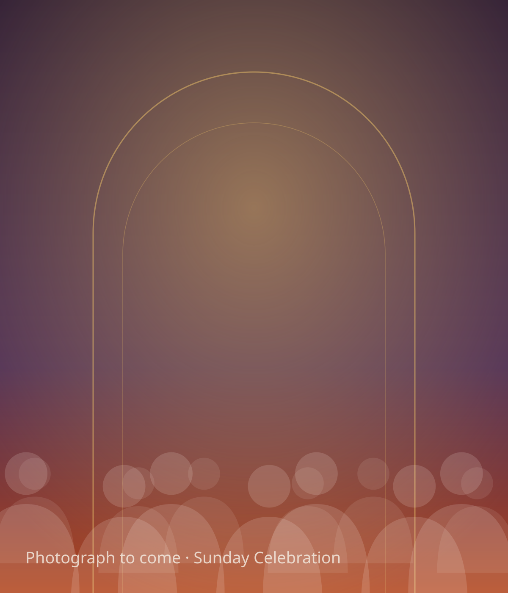
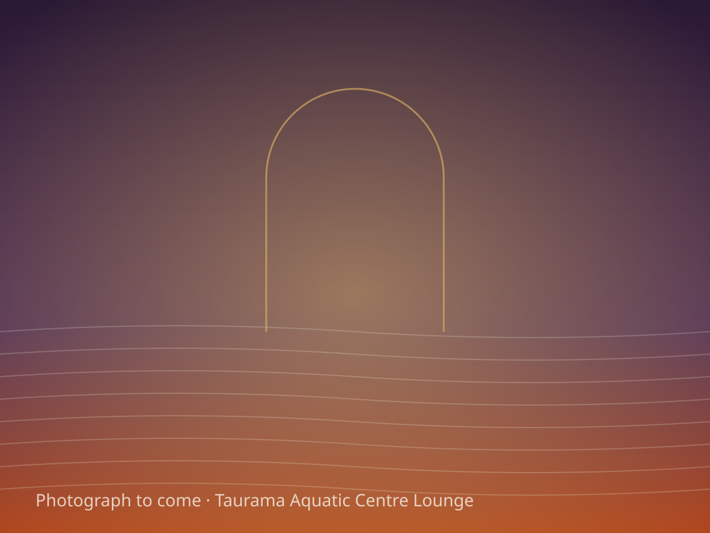

Sunday · 9:00 AM – 1:30 PM
Sunday Celebration
Come as you are. Arrive a few minutes early and our team will welcome you.
Add to calendar (Sunday Celebration, weekly)Port Moresby, Papua New Guinea
The Father’s House, All Nations Church seeks the face of God for this nation and the nations. You are welcome to stand with us.
“If my people … shall humble themselves, and pray … then will I hear from heaven … and will heal their land.”
Taurama Aquatic Centre Lounge, Port Moresby
Next: Sunday Celebration

Plan your visit
Sunday · 9:00 AM – 1:30 PM
Come as you are. Arrive a few minutes early and our team will welcome you.
Add to calendar (Sunday Celebration, weekly)Friday · 7:00 PM
The front door of this house. Come and contend with us in prayer for this house, this city, and the nations, and watch what God does.
Add to calendar (Breakthrough Prayer Night, weekly)
Who we are
The Father’s House, All Nations Church is a praying people in Port Moresby, standing in the gap for Papua New Guinea and the nations. In this house, prayer is not a programme to attend; it is the engine of all that God does here, and the reason this house exists.
“Is it not written, ‘My house shall be called a house of prayer for all the nations’?”
This house stands within the International Strategic Alliance of Apostolic Churches (ISAAC), under Dr Jonathan David, its Presiding Apostle.
In bodily form, Jesus was the Father’s House, the fullness of the Godhead dwelling with Him. The Church now stands in His place on the earth, and prayer was His first passion. When this house gives itself to prayer, it does what He did: it lives from the secret place and contends for Heaven to touch the ground.
| Entity | The Father’s House Inc., a network of churches across Papua New Guinea |
|---|---|
| Registration | IPA 5-109620, registered 31 March 2021 |
| Base | All Nations Church, a full gospel, apostolic and prophetic kingdom church, Port Moresby |
| Senior Pastor | Pastor Ben Minok, with his wife Jessica |
| Covering | Under the direct spiritual input of Dr Jonathan David since 9 April 2021 |
| Network | 1st Generation ISAAC Pastors since 20 April 2021; the newest ISAAC church in Papua New Guinea |
| Venue | Taurama Aquatic Centre Lounge, Port Moresby |
This house seeks His face before His hand. Corporate, contending intercession stands at the centre of all it does.
The Scriptures fuel and govern this house’s intercession; sound, prophetic teaching calls the house higher.
All of it flows from the secret place: Spirit-led worship, encounter, and the manifest presence of God.
Why we pray
Not a warm-up. Not a last resort. The first work of the Church, and the reason breakthrough comes.
“The effectual fervent prayer of a righteous man availeth much.”
Every awakening, every deliverance, every shift over a nation was born first in a place of prayer. What this house will not contend for, it will not carry.
Before the miracles and the crowds, He withdrew to pray. This house follows Him into the secret place, and into the corporate intercession that moves cities.
This house stands in the gap for Papua New Guinea and the nations until what Heaven has decreed is seen on the earth.
A house of breakthrough prayer. Executing the Mandate. Advancing the Kingdom. It is now.
Leadership
The leaders of this house carry the mandate the same way they call the house to carry it: through prayer, intercession, and the prophetic.
Founder and Senior Elder, The Father’s House Inc.; Senior Pastor, All Nations Church, Port Moresby
His core focus is prayer, intercession, and the prophetic. Trained in the Dr Jonathan David Permanent School of the Prophets, Muar, Malaysia.
Apostolic covering; Presiding Apostle of the ISAAC Network
The house has been under his direct spiritual input since 9 April 2021. Founder and Senior Pastor of All Nations Sanctuary, Muar, Johor, Malaysia.
The Father’s House and ISAAC Network bring together the volunteers and department heads who serve this house, from worship to welcome, hospitality to logistics. Their faithful service behind the scenes makes every gathering possible.
Get involvedBegin here
“Heavenly Father, I come to You in the Name of Jesus. I believe that Jesus Christ is the Son of God, and that He died for my sins and was raised from the dead for my justification. I receive Him now as my Lord and Saviour. Amen.”
Pray those words and mean them, and everything changes. This is the confession of faith Scripture sets out, on the pattern of Romans 10:9. Welcome to the family of God. Tell this house, and we will pray with you and help you take your first steps in the secret place.
I prayed this — tell the houseProphetic word
These are the prophetic words declared over Papua New Guinea, the Pacific, and the nations. This house does not file them away; it takes them into the prayer room and contends until they come to pass.
Share what the Spirit has shown youAs a house, we posture ourselves to hear and respond to what the Spirit is saying. These are the words spoken over this house, this city, and this nation that The Father’s House, All Nations Church is actively standing on and stewarding a response to.
The Lord has spoken favour over Papua New Guinea: a set time where delay gives way to breakthrough. This is a season for the nation to arise, and for this house to contend in prayer for what has been declared over our land.
Beyond our own nation, the Spirit is speaking to the Church across the globe, calling the Body of Christ to arise, take territory, and advance the Kingdom without delay.
To be recorded
Each word will be published here with its date, the one who delivered it, and the stream it belongs to.
Conferences
Throughout the year this house gathers for conferences and encounters: days of contending prayer, impartation, and prophetic ministry that send the house back out sharper, bolder, and resolved.
Dates to be announced
Our flagship gathering: days of worship, intercession, impartation, and prophetic ministry for the whole house.
Dates to be announced
Equipping pastors, elders, and ministry leaders to carry the mandate with excellence in prayer and the Word.
Dates to be announced
Raising up the next generation of Kingdom carriers who cultivate the secret place of prayer.
Giving
Tithes and offerings keep the prayer altar burning, sustaining intercession, the Word, and the Gospel across Papua New Guinea and beyond. Every seed sown sends this house further into the nations.
“Bring the whole tithe into the storehouse, that there may be food in my house.”
Bank transfer details to be published. Until then, write to the house and you will receive the details directly.
Ask about givingConnect
Whether you are a first-time guest or a long-standing member, write to the house: share a prayer request, ask a question, or simply say hello.